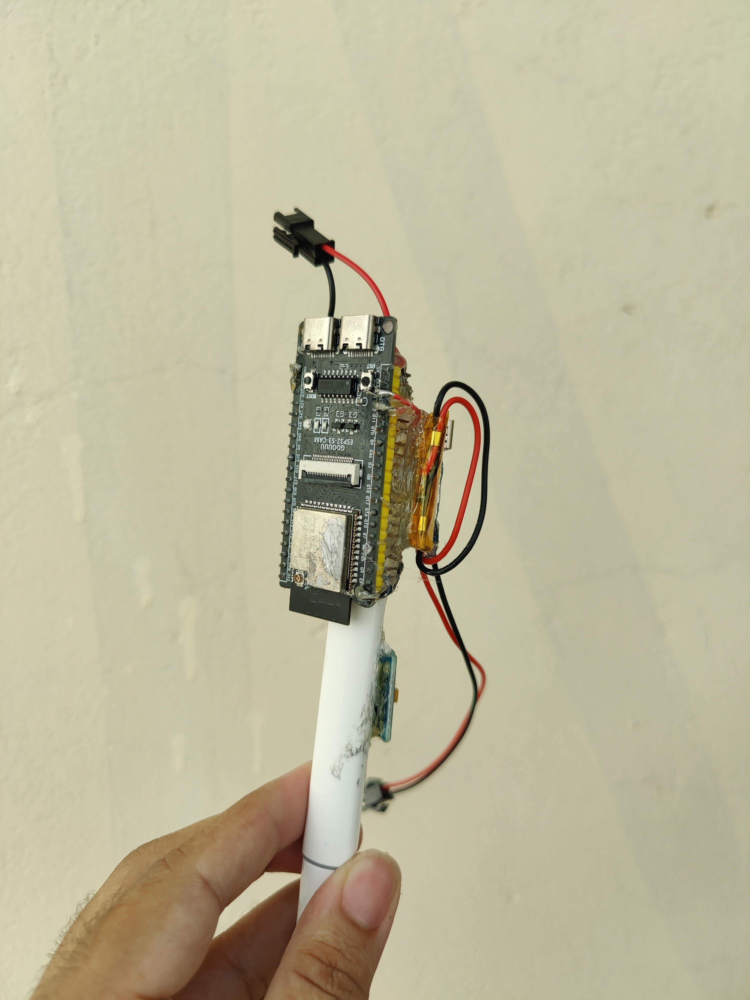

TinyML & HardwareSmart Pen: On-Device Motion & Handwriting TinyML
Designed a miniaturized embedded sensor prototype capturing 6-axis IMU dynamics to classify handwritten words and gestures on-device—without cameras or cloud processing.
- High-rate sensor logging firmware written in C/C++ with precise timestamps.
- Edge Impulse DSP spectral analysis & 1D CNN classifier with 100ms sliding window stride.
- Achieved >95.9% cross-validation accuracy deployed directly onto microcontroller hardware.